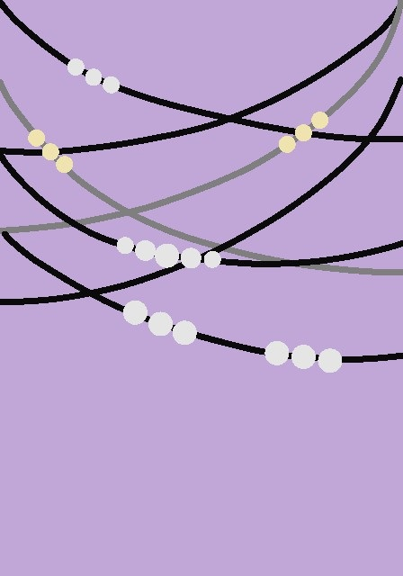

<!DOCTYPE html>
<html lang="fi">
  <head>
    <meta charset="utf-8" />
    <title>Moduuli 4</title>
    
    <link rel = "stylesheet"
       type = "text/css"
       href = "second.css" />
    
    <style>
      
    
  </head>
  <body>
    
    <h1>Tansselin taideteoksia</h1>
    <p>Tämä sivu sisältää muutaman Tansselin parhaimmista töistä. Kuvat ovat syntyneet Passpartout: The Starving Artist -pelissä.</p>
    
    
    <!img src="simmuloita.jpg" alt="Tansselin taideteos Simmuloita" width="200">
    <!img src="vihreä_atomipilvi.jpg" alt="Tansselin taideteos Vihreä Atomipilvi" width="200">
    <!img src="sinisyyskasvu.jpg" alt="Tansselin taideteos Sinisyyskasvu width="200">
    
    <h2>Alla linkki takaisin pääsivulle</h2>
    
    <a href="index.html">Pääsivulle</a>
  
  </body>
</html>
